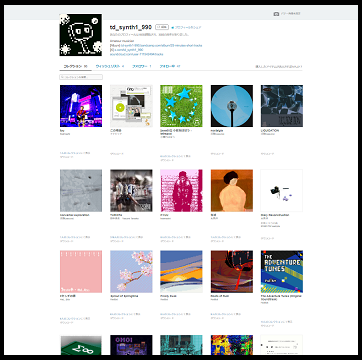
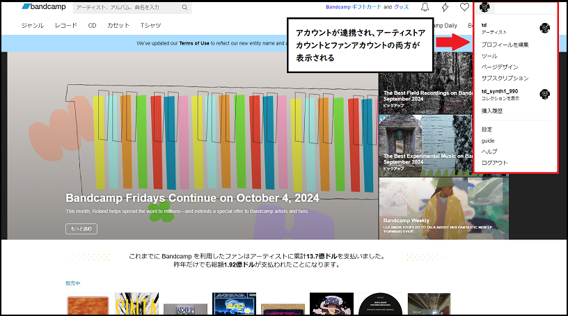
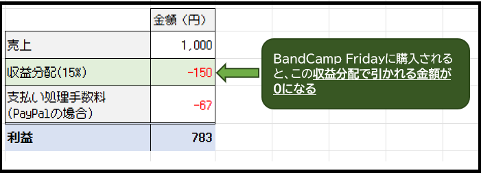
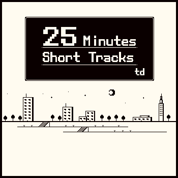

◆BandCampの使い方とBandcamp Friday◆
2024年10月3日
音楽
僕はBandcampでアルバムを公開していますが、Twitterで関わりがある方もそうでない方もBandcampに馴染みがないと思うので、ちょっとした説明をしようと思います。
Bandcampで音楽を聴く
そもそもBandcampとは音楽の再生・購入が可能なアメリカ発のプラットフォームで、ミュージシャンは楽曲をデータで販売できるだけでなく、CDやカセット等の物理メディア、Tシャツなどのグッズを販売している人もいます。
リスナーはアーティスト名や曲名での検索だけでなく、ジャンルで音楽を探す（digる、という言葉がよく使われます）ことも可能。
価格についても、アルバムの全曲を無料で聴ける、アルバムのうち数曲を無料公開し他は購入した人のみ聴ける、値段を購入者が自由に決めるなどミュージシャンによって様々な方法をとることができます。
日本で知名度のあるミュージシャンだと高野寛や、平沢進が近年のアルバムをBandcampで販売していますね。
Bandcampで音楽を聴くのに特別なことは必要ありません。たとえばこのリンクを踏んでBandcampでtdのアルバムを聴くことはアカウントが無くても可能です。
ただし、アカウントがあると購入した作品の一覧を「コレクション」画面で確認したり、気になる作品をウィッシュリストに入れておくことができます。

▲PCのブラウザで見たコレクション画面。スマートフォンのブラウザやアプリからでも同じく、購入した作品をここから聴くことができます。他の人に見られたくなければ非公開にする事も可能。
アカウントにはいわゆる一般リスナー用の「ファンアカウント」と、作品を公開・販売したい人用の「アーティストアカウント」があります。
ファンアカウントの方は日本語対応していますし、ネット上に解説記事もあるのでアカウント作成はそんなに難しくないはずです。
また、ファンアカウントを作った後に「やっぱり自分も音楽やりたい！」とアーティストアカウントを作った場合、それらを連携させることも可能です。

▲アーティストアカウントとファンアカウントを連携した状態。
Bandcamp Fridayについて
Bandcampで楽曲を販売した場合、売り上げのうち15%が収益分配（Revenue Share）としてBandcampに回収されます。たとえばアルバムが1,000円で売れた場合、150円が収益分配ですね。
Bandcamp Fridayはコロナ禍で経済的な打撃を受けたアーティストやレーベルを支援するために、Bandcampが2020年3月から定期的に続けている活動で、この日に購入されるとその収益分配が免除されます。

▲Bandcampで1,000円のアルバムが購入された場合の売上・収益の一例。
ちなみに表のドットっぽいフォントはゼロピクセルフリーフォント様の「マルモニカ」です
販売管理費が減ることになるので、ミュージシャンにとって一購入当たりの利益が増えることになりますね。
もちろん、それをリスナーに還元するために作品の値段そのものをBandcamp Fridayに下げるミュージシャンもいます。
次回のBandcamp Friday
ちなみに2024年のBandcamp Fridayは、調べた限りでは残すところ10月4日と12月6日です。
次回は日本時間で10月4日16:00～翌5日15:59のようですね（参考リンク：Is It Bandcamp Friday?）。
もしあなたの目の届く範囲の誰かが、あなたの興味のある音楽をやっていて、Bandcampで楽曲を販売しているなら、
この週末に購入してみるというのも日々のよい楽しみ方のひとつとなるでしょう。
以上
◆アルバム「25 Minutes Short Tracks」制作◆
2024年9月27日
音楽制作

アルバムを制作しました。このサイトに配置しているフリーDL音楽との違いは、ひとつのコンセプトに基づいて各曲を制作したことと、Bandcampにて0円以上で購入できるようにしてあることです。
制作の動機とコンセプト
タイトル通り短い曲たちをまとめています。作曲をしていると曲の一部分だけが出来るものの続きができずお蔵入りするということがよくあるのですが、ゲーム「ゆめにっき」のサントラを聴いているときにふと「曲って……短くてもいいのでは？」と思い、普段だったら楽曲の冒頭部分として作って続きをどうしようかなと考えるところを「いや、続きなんてない、これで一つの曲！」とすることにしました。
参考にした曲の例として「ゆめにっき」サントラの曲はほとんどが短く、例えばタイトル画面の曲「ゆめのはじまり」は2小節の繰り返し、そのほか沢山の世界を歩き回るときの楽曲もほとんど4小節前後の繰り返しとなっています。他には好きなゲームで「アークザラッド」がありますが、これも「チョンガラ」は4小節、「セーブ&ロード」はたった2小節の繰り返しです。
もちろん、これはゲームのプレイ体験と同時であるからこそ退屈しないということに留意が必要ですが、例えば僕の楽曲をゲームあるいは生活や作業のBGMとして使うのであれば、同じようにごく短いループの繰り返しでも充分楽曲として成立するだろうと考えました。
そうした考えを発端に、なるべく短く、シンプルに作るということをコンセプトとしました。ただし、聴き手にとってシンプルであることと制作に時間をかけないことは必ずしもイコールではありません。
Bandcamp、YouTube等 各サイトへの投稿
Bandcamp
Bandcampはアマチュアからプロまで使用している音楽配信サイトです。プロだと例えば平沢進など、メジャーレコード会社から独立して活動しているアーティストが使用しています。
ミュージシャンが無料ないしは値段を設定して楽曲を配信、販売することができ、「アルバムを○○円で販売する」、「10曲のうち3曲は無料で聴け、全曲聴くには■■円で購入可能」など様々な方法が取れます。
今回はお金を出してくれる人がいれば嬉しいという気持ちと、自分にとって習作であるという意識が強いことから、「無料で聴けるが、リスナーが値段を決めて購入すればダウンロードできる」という方法を取りました。
Bandcampのアプリやブラウザ上でも聴ける他、購入すればアカウントの「コレクション」に追加されるのでそこから聴けたり、ダウンロードしてPCやスマートフォン、ウォークマンなどに入れて聴くこともできます。
なんと今日時点で2名の方が購入してくれています。すごくありがたい……！！
また、後述のSoundCloudやYouTubeでも無料で聴けるようにしたかったので、Bandcampでも0円での購入が選択肢に無いと整合性が取れないと思ったのもあります。
SoundCloud
SoundCloudも多くのミュージシャンが楽曲を投稿していますね。有料プランに加入すれば月額サブスク配信も可能なようですが、個人的にはサブスクで配信したいという気持ちは全くないため普通に曲を投稿して聴いてもらうための場として利用しています。
YouTube
言わずと知れたYoutubeです。個人的には、一曲のMVを見るということはあってもアルバム単位で聴くという聴き方をYouTubeではしないのですが、
作業用などのBGMとしてはYouTube垂れ流しという人もおろうと思い、全曲まとめて25分の動画として投稿しました。
そういうわけなので気が向いたらtdの25 Minutes Short Tracksを聴いてみて、ちょ。
以上